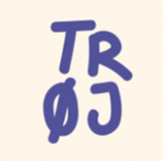

COMMUNITY
Udover vores passion om at brygge den bedst smagende alkoholfri øl. Så drømmer vi om at skabe fokus på fysisk og mental sundhed.
Derfor har vi skabt Community - et fællesskab der kan lidt af hvert.

Gennem vores arbejde og passion for alkoholfri øl, er vi gennem tiden blevet klogere på hvilke fordele der er forbundet med at drikke alkoholfri øl. Både fysiske fordele, men også mentale fordele.
Vi drømmer om at vores bryghus skaber rammer for et åbent og tolerent miljø, hvor der er plads til alle!
Derfor er døren altid åben hos os, så kom endelig ned forbi til en snak.
Hvis du har en sjov ide til et arrangement, så tag endelig fat i os, vi vil elske at hjælpe.
LØBEKLUB

